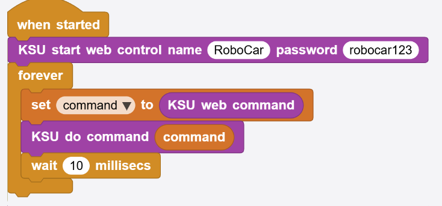
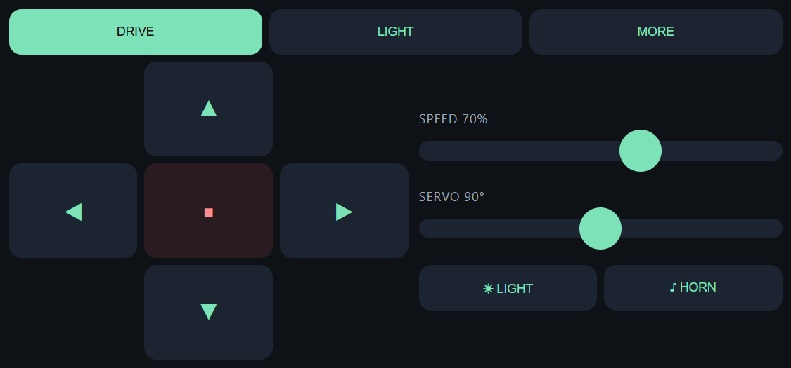
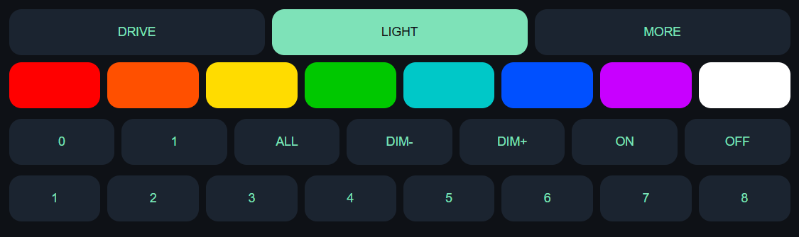
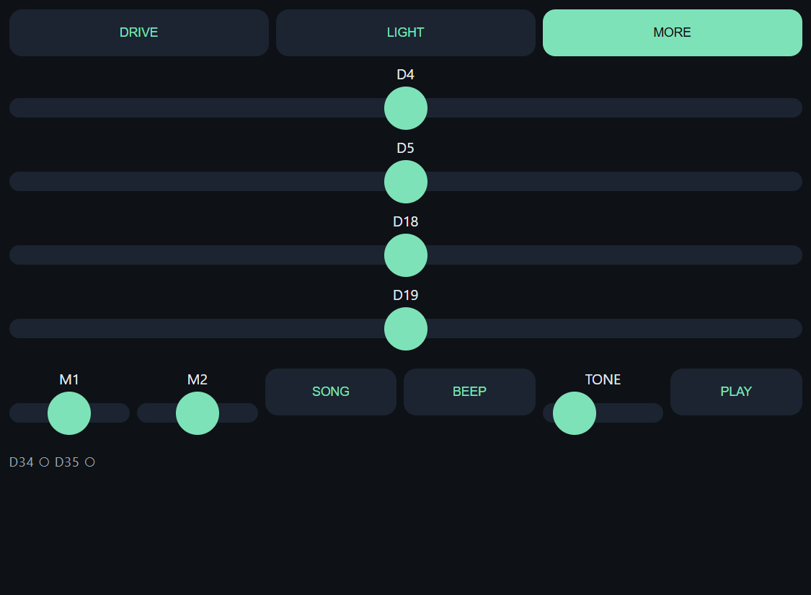

บทที่ 1 ไลบรารีนี้คืออะไร
ก่อนจะเขียนโปรแกรมสักบรรทัด ต้องเข้าใจก่อนว่าไฟล์ในโปรเจกต์นี้แต่ละไฟล์ทำหน้าที่อะไร
KSU_RoBoESP32 คือไลบรารีของ MicroBlocks ที่ห่อความสามารถทั้งหมดของบอร์ด Cytron ROBO ESP32 เอาไว้เป็นบล็อกภาษาไทยเข้าใจง่าย พร้อมกับเว็บเซิร์ฟเวอร์ในตัว — บอร์ดจะปล่อยสัญญาณ WiFi ของตัวเอง แล้วส่งหน้าเว็บควบคุมให้โทรศัพท์ที่เข้ามาเชื่อมต่อ นักเรียนจึงบังคับรถจากมือถือได้โดยไม่ต้องเขียน HTML เลยสักบรรทัด
| ไฟล์ | หน้าที่ |
|---|---|
KSU_RoBoESP32.ubl |
ตัวไลบรารี — รวมบล็อกทั้งหมดที่นักเรียนเรียกใช้ นำไปเพิ่มเข้าโปรเจกต์ใหม่ของตัวเองได้ |
RoboCar.ubp |
ไฟล์โปรเจกต์ (เฉลย) — ไฟล์ที่นักเรียนโหลดลงบอร์ดจริง ข้างในมีสำเนาไลบรารีฝังมาครบแล้ว |
RoboCar-Control.html |
หน้าเว็บควบคุมฉบับอ่านง่าย ไว้เปิดดู/แก้ในเบราว์เซอร์ปกติ (ไม่ใช่ไฟล์ที่บอร์ดส่งออกไปโดยตรง) |
เรื่องสำคัญที่สุดที่ต้องรู้ก่อน: ไลบรารีมี 2 สำเนา
RoboCar.ubp ฝังสำเนาไลบรารีของตัวเองไว้ข้างใน การแก้ไฟล์ .ubl เฉย ๆ
จึงไม่ทำให้พฤติกรรมของ .ubp ที่ส่งออกไปแล้วเปลี่ยนแปลง และเพราะสองสำเนานี้ตั้งชื่อไม่เหมือนกัน
ชื่อบล็อกที่นักเรียนเห็นจึงต่างกันตามไฟล์ที่เปิด
เปิดจาก RoboCar.ubp | เพิ่มจาก KSU_RoBoESP32.ubl | |
|---|---|---|
| ชื่อบล็อกที่เห็น | KSU forward | KSU_RoBoESP32 forward |
| บล็อกเริ่มต้น | KSU start web control | KSU_RoBoESP32 start web control |
| การทำงาน | เหมือนกันทุกประการ ต่างกันแค่ชื่อที่แสดงเท่านั้น | |
ในคู่มือนี้เขียนชื่อบล็อกแบบสั้น (KSU forward) ตามที่เห็นใน
RoboCar.ubp เพราะเป็นไฟล์ที่ใช้สอนจริง ถ้านักเรียนเพิ่มไลบรารีจากไฟล์ .ubl เอง
ให้อ่านว่า KSU = KSU_RoBoESP32 ทุกที่
บทที่ 2 ติดตั้งและเปิดใช้ไลบรารี
มีสองทาง เลือกตามว่าจะสอนแบบ "เปิดเฉลยมาดู" หรือ "เริ่มจากโปรเจกต์เปล่า"
ทาง ก · เปิดไฟล์เฉลย (แนะนำสำหรับคาบแรก)
- เปิดโปรแกรม MicroBlocks
- เมนู File → Open แล้วเลือก
RoboCar.ubp - ไลบรารีติดมาพร้อมไฟล์ทันที ไม่ต้องเพิ่มอะไรอีก
- ต่อสาย USB แล้วกดปุ่มเชื่อมต่อ (รูป USB) เลือกพอร์ตของบอร์ด
ทาง ข · เพิ่มไลบรารีเข้าโปรเจกต์เปล่า
- เปิด MicroBlocks แล้วสร้างโปรเจกต์ใหม่
- ที่แถบบล็อกด้านซ้าย กด + Add Library
- เลือกไฟล์
KSU_RoBoESP32.ublจากเครื่อง - จะได้หมวดบล็อกใหม่ ชื่อบล็อกจะขึ้นต้นด้วย
KSU_RoBoESP32
ครั้งแรกที่ใช้เครื่องนี้ ต้องติดตั้งไดรเวอร์ CP210x ก่อน ไม่อย่างนั้นคอมพิวเตอร์จะมองไม่เห็นบอร์ด
(มีไฟล์ CP210x_Windows_Drivers.zip อยู่ในโปรเจกต์)
เปิดใช้งานถาวรในบอร์ด: หลังกดรันแล้วโปรแกรมจะอยู่ในบอร์ดจริง ถอดสาย USB แล้วจ่ายไฟจากแบตเตอรี่ รถก็ทำงานเองได้เลย ไม่ต้องต่อคอมพิวเตอร์ค้างไว้
บทที่ 3 โปรแกรมแรก — แค่ 3 บล็อก
ทั้งโปรเจกต์เริ่มจากสคริปต์สั้น ๆ ชุดเดียวนี้เท่านั้น

RoboCar.ubp — เริ่มเว็บควบคุม แล้ววนอ่านคำสั่งไปเรื่อย ๆอธิบายทีละบรรทัด
| บล็อก | ทำอะไร |
|---|---|
| KSU start web control name RoboCar password robocar123 | เปิดจุดปล่อย WiFi ชื่อ RoboCar ตั้งความเร็วเริ่มต้น 70% หมุนเซอร์โวทั้งสี่ตัวไปที่ 90°
ตั้งค่าเซนเซอร์ระยะที่ trig 33 / echo 32 และหยุดมอเตอร์ให้เรียบร้อย
รหัสผ่านต้องยาวอย่างน้อย 8 ตัวอักษร |
| command = KSU web command | ถามว่า "ตอนนี้มีใครกดปุ่มบนหน้าเว็บไหม" ถ้ามีจะได้คำสั่งกลับมาเป็นคำเดียว เช่น Forward
ถ้ายังไม่มีจะได้ข้อความว่าง |
| KSU do command command | บล็อกอัตโนมัติ — รับคำนั้นไปทำให้ครบทุกคำสั่งที่หน้าเว็บส่งได้ (21 คำสั่ง) |
| wait 10 millisecs | พักสั้น ๆ ให้บอร์ดได้หายใจ ไม่ให้ลูปกินซีพียูจนงานอื่นไม่ได้ทำ |
ขั้นตอนใช้งานจริง
- กดปุ่มเริ่มทำงาน ▶ ที่แถบเครื่องมือของ MicroBlocks หรือคลิกที่ตัวสคริปต์ตรง ๆ
- ที่โทรศัพท์ เข้าตั้งค่า WiFi เลือกเครือข่ายชื่อ
RoboCarใส่รหัสrobocar123 - เปิดเบราว์เซอร์ พิมพ์
http://192.168.4.1 - ถือโทรศัพท์แนวนอน — ถ้าถือแนวตั้งหน้าจอจะขึ้นว่า "ROTATE TO LANDSCAPE"
อยากรู้เลข IP ให้แน่ใจ? คลิกบล็อก KSU IP address ใน MicroBlocks
แล้วจะมีป้ายบอกเลขขึ้นมา (ปกติคือ 192.168.4.1 เสมอเมื่อบอร์ดเป็นตัวปล่อย WiFi เอง)
บทที่ 4 หลักการทำงานเบื้องหลัง
เข้าใจสองเรื่องนี้แล้ว จะแก้โปรแกรมต่อเองได้ทั้งหมด
1. ทุกอย่างเกิดในลูปเดียว
บล็อก KSU web command ถูกเรียกหนึ่งครั้งต่อการวนหนึ่งรอบ และในหนึ่งครั้งนั้นมันทำ 4 อย่าง:
- เช็กว่ามีคำขอ HTTP ค้างอยู่ไหม — ถ้าไม่มี ตอบกลับเป็นข้อความว่างทันที
- ถ้าโทรศัพท์เพิ่งเปิดหน้าเว็บครั้งแรก (ที่อยู่ว่าง) → ส่งหน้าเว็บควบคุมกลับไป แล้วตอบเป็นค่าว่าง
- ถ้าเป็นการถามสถานะ
/Status→ ตอบเองเงียบ ๆ แล้วตอบเป็นค่าว่าง (คำนี้ไม่มีวันหลุดถึงโปรแกรมนักเรียน) - นอกนั้น → ตอบ
200 OKให้เบราว์เซอร์ก่อน แล้วคืนคำสั่งคำเดียวให้โปรแกรม
ทำไมต้องตอบเบราว์เซอร์ก่อนแล้วค่อยทำงาน? เพราะหน้าเว็บจะยิงคำสั่งถัดไปได้ก็ต่อเมื่อคำสั่งก่อนหน้าตอบกลับแล้ว การตอบทันทีทำให้รถรับคำสั่งใหม่ได้ลื่นไม่มีสะดุด
2. รูปแบบคำสั่ง: ตัดด้วยขีดล่าง
ที่อยู่ที่หน้าเว็บยิงมาจะถูกตัดด้วยเครื่องหมาย _ ช่องแรกคือคำสั่ง ช่องที่เหลือคือตัวเลข
| หน้าเว็บส่ง | คำสั่งที่ได้ | ตัวเลขที่ได้ | อ่านด้วย |
|---|---|---|---|
/Forward | Forward | ไม่มี | — |
/Speed_70 | Speed | 70 | KSU command value |
/Rgb_2_255_120_0 | Rgb | 2, 255, 120, 0 | KSU command value # 1..4 |
/Light1 | Light1 | ไม่มี | — |
ทำไม Light1 ถึงไม่เขียนเป็น Light_1? ตั้งใจไว้อย่างนั้น
เพื่อให้นักเรียนได้เรียนแนวคิด "คำต่างกัน → ทำงานต่างกัน" ให้เข้าใจก่อน แล้วค่อยเรียนเรื่องการส่งค่าตัวเลขทีหลัง
ต้องอ่านตัวเลขในรอบเดียวกัน — KSU command value เก็บค่าของคำสั่งล่าสุดเท่านั้น พอมีคำสั่งใหม่เข้ามาค่าเก่าจะถูกทับ และถ้าคำสั่งล่าสุดไม่มีตัวเลขมาด้วย บล็อกนี้จะรายงาน 90 (มุมกลางของเซอร์โว) ไม่ใช่ 0
บทที่ 5 แบบยาว (if) กับแบบบล็อกเดียว
สองแบบนี้ทำงานเหมือนกัน ต่างกันที่แบบหนึ่งสอนตรรกะ อีกแบบสอนความสะดวก
แบบยาว — สำหรับสอนเงื่อนไข
ในไฟล์เฉลยมีสคริปต์ชุด if สิบอันวางแยกไว้ข้าง ๆ ลูปหลัก (ไม่ได้ต่อกับอะไร ไม่มีอะไรรันมัน)
ตั้งใจวางไว้ให้ห้องเรียนเห็นว่า บล็อกลัดไม่ใช่เวทมนตร์ ข้างในมันก็คือ if ธรรมดา ๆ นี่เอง
set command to (KSU web command)
if (command) = 'Forward' → KSU forward
if (command) = 'Backward' → KSU backward
if (command) = 'Left' → KSU turn left
if (command) = 'Right' → KSU turn right
if (command) = 'Stop' → KSU stop
if (command) = 'Light1' → KSU light (on)
if (command) = 'Light0' → KSU light (off)
if (command) = 'Horn' → KSU horn
if (command) = 'Speed' → KSU set speed (KSU command value) %
if (command) = 'Servo' → KSU set servo (D4) to (KSU command value) degreesแบบบล็อกเดียว — สำหรับใช้งานจริง
set command to (KSU web command)
KSU do command (command)ครอบคลุมครบทั้ง 21 คำสั่ง รวมของแท็บ LIGHT และ MORE ที่แบบยาวข้างบนยังไม่ได้เขียนถึง
เกร็ดเบื้องหลัง: ภายในไลบรารี KSU do command รับผิดชอบ 10 คำสั่งของแท็บ DRIVE
แล้วโยนที่เหลืออีก 11 คำสั่งไปให้บล็อกลับชื่อ _do2 ที่ต้องแยกเพราะ
หนึ่งสคริปต์ของ MicroBlocks คอมไพล์ได้ไม่เกิน 1000 ไบต์ ไม่ได้แยกเพราะเหตุผลอื่น
ลำดับการสอนที่แนะนำ
คาบ 1 · ขับได้ก่อน
ใช้ 3 บล็อกในบทที่ 3 ให้รถวิ่งได้ทันที เห็นผลลัพธ์เร็ว นักเรียนตื่นเต้น
คาบ 2 · แกะว่ามันทำงานยังไง
ถอด KSU do command ออก แล้วให้นักเรียนต่อ if เองทีละอัน จนขับได้เหมือนเดิม
คาบ 3 · ต่อยอด
ใส่บล็อกอัตโนมัติกลับเข้าไป แล้วเพิ่มเซนเซอร์ระยะ / เขียนคำสั่งใหม่ของตัวเอง
บทที่ 6 คู่มือบล็อกทั้งหมด
ตัวเลขในวงเล็บคือค่าเริ่มต้นของช่องกรอก · ชื่อในตารางเป็นแบบสั้นตาม RoboCar.ubp
🌐 เว็บควบคุม
| บล็อก | ความหมาย |
|---|---|
| KSU start web control name _ password _ | เปิด WiFi + เว็บเซิร์ฟเวอร์ และตั้งค่าเริ่มต้นทุกอย่าง (รหัสผ่าน ≥ 8 ตัว) |
| KSU web command | รายงานคำสั่งล่าสุดจากหน้าเว็บ หรือข้อความว่างถ้ายังไม่มี |
| KSU command value | ตัวเลขตัวแรกที่มากับคำสั่ง (รายงาน 90 เมื่อไม่มีตัวเลข) |
| KSU command value # 1 | ตัวเลขลำดับที่ i (รายงาน 0 ถ้าไม่มี) ใช้กับคำสั่งที่ส่งหลายค่า เช่น Rgb |
| KSU do command _ | ทำตามคำสั่งให้อัตโนมัติ ครบทุกคำที่หน้าเว็บส่งได้ |
| KSU IP address | เลข IP ของบอร์ด (ปกติ 192.168.4.1) |
🚗 การขับเคลื่อน
| บล็อก | ความหมาย |
|---|---|
| KSU forward / KSU backward | เดินหน้า / ถอยหลัง ด้วยความเร็วที่ตั้งไว้ |
| KSU turn left / KSU turn right | หมุนซ้าย / ขวา อยู่กับที่ (ล้อสองข้างหมุนสวนกัน) |
| KSU stop | หยุดมอเตอร์ทั้งสองตัว |
| KSU set speed 70 % | ตั้งความเร็วที่ใช้กับทุกบล็อกข้างบน (หน้าเว็บเลื่อนได้ 20–100) |
| KSU drive forward for 500 ms | วิ่งไปทางที่เลือกตามเวลาที่กำหนด แล้วหยุดเอง เหมาะกับงานวิ่งตามเส้นทางที่วางไว้ |
| KSU steer 0 | เลี้ยวแบบนุ่มนวล: −100 หมุนซ้ายสุด, 0 ตรง, 100 หมุนขวาสุด ล้อด้านในโค้งจะช้าลง (และถอยได้) ส่วนล้อด้านนอกคงความเร็วเดิม |
| KSU set motor M1 power 70 | สั่งมอเตอร์ทีละตัว −100 ถึง 100 (ยังคิดค่าปรับทิศให้อยู่) |
| KSU set motor trim M1 -1 M2 -1 | ปรับทิศมอเตอร์: ใช้ 1 ถ้าหมุนถูกทาง, −1 ถ้าหมุนกลับทาง |
รถวิ่งผิดทาง แก้ตรงนี้: รถถอยหลังและเลี้ยวสลับข้าง → ตั้ง trim เป็น -1 -1 ทั้งคู่ ·
รถหมุนอยู่กับที่แทนที่จะเดินหน้า → สลับแค่ตัวใดตัวหนึ่ง เช่น 1 -1
🦾 เซอร์โว
| บล็อก | ความหมาย |
|---|---|
| KSU set arm angle 90 degrees | ทางลัดของเซอร์โวช่อง D4 (แขนกล) |
| KSU set servo D4 to 90 degrees | เลือกช่องได้ 4 ช่อง: D4, D5, D18, D19 · มุม 0–180 องศา |
ไลบรารีใช้มุม 0–180 ทุกที่ ส่วนบล็อกของ Cytron เองใช้ −90 ถึง 90 ไลบรารีแปลงให้ตรงนี้จุดเดียว นักเรียนจึงไม่ต้องคิดเลขติดลบเลย
💡 ไฟ
| บล็อก | ความหมาย |
|---|---|
| KSU light on | เปิด/ปิดไฟหน้าสีขาวนวลทั้งสองดวง |
| KSU set RGB all color ■ | เลือกสีจากจานสีของ MicroBlocks · เป้าหมายเลือกได้ 0, 1 หรือ all |
| KSU set RGB all red 255 green 240 blue 200 | ผสมสีเอง ค่าละ 0–255 |
| KSU change RGB brightness by 25 % | บวกเพิ่มความสว่าง / ใส่เลขติดลบเพื่อหรี่ลง |
| KSU LED D16 on | เปิด/ปิด LED ตามชื่อขา หรือเลือก all เพื่อสั่งทั้ง 8 ดวงพร้อมกัน |
| KSU LED number 1 on | สั่ง LED ด้วยเลข 1–8 ตามลำดับที่พิมพ์บนบอร์ด (เลขนอกช่วงจะถูกเมิน ไม่ทำให้โปรแกรมพัง) |
🔊 เสียง
| บล็อก | ความหมาย |
|---|---|
| KSU horn | เสียงแตร สองโน้ตต่อกัน |
| KSU beep | เสียงติ๊ดสั้น ๆ เหมาะกับใช้เตือน |
| KSU play tone 440 Hz for 300 ms | กำหนดความถี่เอง |
| KSU play note c octave 0 for 400 ms | เล่นเป็นตัวโน้ตดนตรี |
| KSU play Happy Birthday | เล่นเพลงสำเร็จรูปที่มากับบอร์ด |
📡 การรับค่า (เซนเซอร์)
| บล็อก | ความหมาย |
|---|---|
| KSU button D34 is pressed | ปุ่มบนบอร์ดถูกกดอยู่ไหม (มีสองปุ่ม D34 และ D35) |
| KSU read analog pin _ | อ่านค่าแอนะล็อกจากขาที่ระบุ ใช้กับเซนเซอร์เสริมที่ต่อเพิ่ม |
| KSU distance cm | ระยะห่างจากสิ่งกีดขวางด้านหน้า หน่วยเซนติเมตร (ดูบทที่ 9) |
| KSU set ultrasonic trig 33 echo 32 | ย้ายขาของเซนเซอร์ ปกติไม่ต้องใช้เพราะบล็อกเริ่มต้นตั้งให้แล้ว |
บทที่ 7 คำสั่งที่หน้าเว็บส่งมา
ทั้งหมด 21 คำสั่ง — KSU do command รองรับครบทุกคำในตารางนี้
คำสั่งแยกตัวพิมพ์เล็ก-ใหญ่ ต้องขึ้นต้นด้วยตัวใหญ่ตัวเดียวเท่านั้น
Forward ใช้ได้ · forward และ FORWARD ใช้ไม่ได้
| คำสั่ง | ที่อยู่ที่ส่งจริง | ผลลัพธ์ | แท็บ |
|---|---|---|---|
Forward | /Forward | เดินหน้า | DRIVE |
Backward | /Backward | ถอยหลัง | DRIVE |
Left | /Left | เลี้ยวซ้าย | DRIVE |
Right | /Right | เลี้ยวขวา | DRIVE |
Stop | /Stop | หยุด | DRIVE |
Light1 | /Light1 | เปิดไฟหน้า | DRIVE |
Light0 | /Light0 | ปิดไฟหน้า | DRIVE |
Horn | /Horn | บีบแตร | DRIVE |
Speed | /Speed_70 | ตั้งความเร็ว 20–100% | DRIVE |
Servo | /Servo_90 | หมุนเซอร์โว D4 ไป 0–180° | DRIVE |
ServoB | /ServoB_90 | เซอร์โว D5 | MORE |
ServoC | /ServoC_90 | เซอร์โว D18 | MORE |
ServoD | /ServoD_90 | เซอร์โว D19 | MORE |
Rgb | /Rgb_2_255_120_0 | ตั้งสี RGB — ค่าแรกคือเป้าหมาย (0, 1, 2=ทั้งหมด) ตามด้วย r g b | LIGHT |
Dim | /Dim_25 | เพิ่ม/ลดความสว่าง (ติดลบได้) | LIGHT |
Led | /Led_3_1 | LED ดวงที่ 1–8, ตามด้วย 1=เปิด 0=ปิด | LIGHT |
Leds | /Leds_1 | เปิด/ปิด LED ทั้ง 8 ดวงพร้อมกัน | LIGHT |
Motor | /Motor_1_70 | สั่งมอเตอร์ตัวที่ 1 หรือ 2 แรง −100 ถึง 100 | MORE |
Tone | /Tone_440_300 | เล่นเสียงตามความถี่และระยะเวลา | MORE |
Song | /Song | เล่นเพลง Happy Birthday | MORE |
Beep | /Beep | เสียงติ๊ด | MORE |
/Status ไม่ใช่คำสั่ง แต่เป็นการที่หน้าเว็บถามข้อมูลกลับ ไลบรารีตอบเองเป็นข้อความ
b1,b2,speed,value,cm เช่น 1,0,70,90,23 = ปุ่ม D34 ถูกกด, D35 ไม่ถูกกด, ความเร็ว 70%,
ค่าล่าสุด 90 และวัดระยะได้ 23 ซม. คำนี้ไม่มีวันหลุดไปถึงโปรแกรมของนักเรียน
บทที่ 8 หน้าเว็บควบคุม 3 แท็บ
หน้าเว็บถูกฝังอยู่ในไลบรารีแล้ว ไม่ต้องติดตั้งอะไรเพิ่ม ไม่ต้องต่ออินเทอร์เน็ต



กลไกสำคัญ: ส่งทีละคำสั่ง
หน้าเว็บจะปล่อยคำสั่งออกไปครั้งละหนึ่งคำสั่งเท่านั้น ถ้ามีการกดปุ่มใหม่ระหว่างที่ยังรอคำตอบอยู่ คำสั่งใหม่จะไปทับคำสั่งที่รออยู่ ไม่ใช่ต่อคิว รถจึงทำตามสิ่งที่นิ้วสั่งล่าสุดเสมอ ไม่ใช่ตามคำสั่งเก่าค้างท่อ
ถ้าจะแก้หน้าเว็บ: ปุ่มใหม่ทุกปุ่มต้องส่งผ่านฟังก์ชัน s() เท่านั้น
การเรียก fetch ตรง ๆ จะข้ามกลไกนี้ และทำให้การบังคับรถหน่วงหรือค้างได้
แก้หน้าเว็บอย่างถูกวิธี: ให้แก้ที่ RoboCar-Control.html ก่อนเสมอ
แล้วค่อยตัดเป็นชิ้น ๆ ไปใส่ในไลบรารี (ตัวหน้าเว็บถูกเก็บเป็นข้อความ 8 ก้อนเพราะหนึ่งสคริปต์เก็บได้ไม่เกิน 1000 ไบต์)
และต้องคัดลอกไปใส่ทั้งสองไฟล์ คือ .ubl และสำเนาที่ฝังใน .ubp
บทที่ 9 เซนเซอร์วัดระยะ HC-SR04 (อุปกรณ์เสริม)
ไม่ต่อก็ใช้งานรถได้ปกติ — บล็อกจะรายงาน 0 เฉย ๆ ไม่มีอะไรพัง
การต่อสาย
| ขาเซนเซอร์ | ต่อเข้ากับ |
|---|---|
| VCC | 5V |
| GND | GND |
| Trig | ขา 33 |
| Echo | ขา 32 |
ต่อแบบนี้แล้วไม่ต้องเพิ่มบล็อกอะไรเลย เพราะ KSU start web control ตั้งค่านี้ไว้ให้ตั้งแต่ต้น
ขา 33 และ 32 คือ LED ดวงที่ 8 และ 7 — ไฟสองดวงนี้จะกะพริบตามจังหวะยิงคลื่น ซึ่งไม่เป็นไร แต่ห้ามสั่งเปิด LED 7 หรือ LED 8 จากแท็บ LIGHT ขณะเสียบเซนเซอร์อยู่ เพราะบอร์ดกับเซนเซอร์จะแย่งกันคุมสายเส้นเดียวกัน
บล็อกทำงานอย่างไร
ยิงสัญญาณสั้น ๆ 10 ไมโครวินาทีออกทางขา trig แล้วจับเวลาว่าเสียงสะท้อนกลับมาเมื่อไร เสียงเดินทางไป-กลับ 1 เซนติเมตรใช้เวลาราว 58 ไมโครวินาที จึงหารด้วย 58 ออกมาเป็นเซนติเมตร
- รายงาน 0 เมื่อ ไม่มีเสียงสะท้อนกลับ คือไม่ได้เสียบเซนเซอร์, ไม่มีอะไรอยู่ในระยะราว 4 เมตร, หรือพื้นผิวนุ่ม/เอียงจนไม่สะท้อนกลับ
- บล็อกนี้หยุดรอคำตอบ นานได้ถึง 25 มิลลิวินาทีเมื่อไม่มีอะไรตอบกลับ
อ่านครั้งเดียวต่อหนึ่งรอบลูปเท่านั้น การเรียกบล็อกนี้ซ้ำ ๆ ติดกันจะทำให้ลูปช้าลงมาก จนรถตอบสนองต่อโทรศัพท์ช้าอย่างสังเกตได้ วิธีที่ถูกคืออ่านเก็บใส่ตัวแปรครั้งเดียว แล้วเอาตัวแปรไปเทียบหลาย ๆ ครั้ง
ตัวอย่าง: หยุดอัตโนมัติเมื่อเจอสิ่งกีดขวาง
วางบล็อกชุดนี้ในลูป forever ต่อจาก KSU do command รถจะหยุดและร้องเตือนเมื่อมีอะไรเข้ามาใกล้กว่า 20 ซม.
set cm to (KSU distance cm)
if (cm > 0) and (cm < 20) {
KSU stop
KSU beep
}ทำไมต้องมีเงื่อนไข cm > 0 ด้วย? เพราะ 0 แปลว่า "ไม่มีเสียงสะท้อนกลับ"
ถ้าไม่ใส่เงื่อนไขนี้ รถจะหยุดทันทีที่ไม่มีอะไรอยู่ข้างหน้าเลย ซึ่งตรงข้ามกับที่เราต้องการ
— ข้อนี้เป็นคำถามชวนคิดที่ดีมากสำหรับในห้องเรียน
บทที่ 10 ตารางขา GPIO
ก่อนต่ออะไรเพิ่มเข้าบอร์ด เช็กตารางนี้ก่อนเสมอ
| ขา | ใช้ทำอะไรอยู่ |
|---|---|
12, 13, 14, 27 | มอเตอร์ทั้งสองตัว (M1, M2) |
15 | ไฟ RGB บนบอร์ด |
23 | ลำโพง/บัซเซอร์ |
4, 5, 18, 19 | ช่องเสียบเซอร์โว D4, D5, D18, D19 |
16, 17, 21, 22, 25, 26, 32, 33 | LED ดวงที่ 1 ถึง 8 ตามลำดับ |
33, 32 | trig / echo ของเซนเซอร์ระยะ — ขาเดียวกับ LED 8 และ LED 7 |
34, 35 | ปุ่มกดบนบอร์ด |
34, 35, 36, 39 | รับค่าได้อย่างเดียว สั่งจ่ายไฟออกไม่ได้ |
ขา 34, 35, 36, 39 เป็นขารับค่าอย่างเดียว ไม่มีวงจรขับสัญญาณออก ถ้าเอา trig ของเซนเซอร์ไปต่อขาพวกนี้ มันจะไม่มีวันยิงคลื่นออกไปได้เลย และบล็อกวัดระยะจะรายงาน 0 ตลอดกาล (ส่วน echo ต่อขาพวกนี้ได้)
บนบอร์ดนี้ไม่มีขาไหน "ว่างจริง ๆ" ที่ว่าง่ายคือช่องเซอร์โวที่ยังไม่ได้เสียบอะไร (4, 5, 18, 19) หรือขา LED ที่ยอมปิดไฟดวงนั้นทิ้ง (16, 17, 21, 22, 25, 26) — ถ้าจะยึดขาไหนไปใช้ ควรจดไว้ด้วยว่าแลกมาด้วยการเสียอะไรไป
บทที่ 11 เพิ่มคำสั่งใหม่ด้วยตัวเอง
สำหรับนักเรียนที่อยากไปต่อ หรือคุณครูที่อยากดัดแปลงโปรเจกต์
การเพิ่มคำสั่งหนึ่งคำ ต้องแตะ 3 จุดพร้อมกัน ขาดจุดใดจุดหนึ่งคำสั่งจะเงียบหายไปเฉย ๆ โดยไม่มีข้อความแจ้งเตือน
1. หน้าเว็บต้องส่งคำนั้น
เพิ่มปุ่มใน RoboCar-Control.html โดยเรียกผ่าน s("ชื่อคำสั่ง")
2. ไลบรารีต้องรู้จักคำนั้น
เพิ่มเงื่อนไขใน _do2 เท่านั้น ห้ามเพิ่มใน KSU do command เพราะจะเกินขีดจำกัด 1000 ไบต์
3. ถ้าต้องมีบล็อกใหม่
เพิ่มบรรทัด spec เพื่อให้บล็อกโผล่ในแถบเครื่องมือ
อย่าลืมสองไฟล์! การแก้ไลบรารีจะถือว่าเสร็จก็ต่อเมื่อลงทั้งใน KSU_RoBoESP32.ubl
และ สำเนาที่ฝังอยู่ใน RoboCar.ubp โดยเปลี่ยนชื่อให้ตรงรูปแบบของแต่ละไฟล์
เพราะ RoboCar.ubp คือไฟล์ที่นักเรียนโหลดลงบอร์ดจริง แก้แค่ .ubl นักเรียนจะไม่เห็นความเปลี่ยนแปลงใด ๆ
เซนเซอร์ไม่ใช่คำสั่ง ถ้าอยากให้หน้าเว็บแสดงค่าจากเซนเซอร์ตัวใหม่ ให้เพิ่มค่านั้น
ต่อท้ายข้อความของ /Status (ห้ามสลับลำดับของเดิม เพราะหน้าเว็บอ่านค่าตามตำแหน่ง)
วิธีนี้ทำให้ค่าจากเซนเซอร์ขึ้นหน้าจอได้โดยไม่กระทบรูปแบบ if (command) = ... ที่ใช้สอน
ข้อควรระวังเรื่องตัวเลข
บอร์ดนี้คิดเลขเฉพาะจำนวนเต็ม เศษทศนิยมถูกตัดทิ้งทันที
เวลาเขียนสูตรให้คูณก่อนแล้วค่อยหาร เสมอ เช่นเขียน (a * b) / c ไม่ใช่ a * (b / c)
ไม่อย่างนั้นผลลัพธ์จะกลายเป็น 0 หรือกระโดดเป็นขั้น ๆ อย่างน่าประหลาด
บทที่ 12 ปัญหาที่พบบ่อย
อาการที่มักเจอในห้องเรียน พร้อมจุดที่ควรไปตรวจก่อน
| อาการ | ตรวจตรงนี้ |
|---|---|
| คอมพิวเตอร์ไม่เห็นบอร์ด | ยังไม่ได้ติดตั้งไดรเวอร์ CP210x หรือใช้สาย USB แบบชาร์จไฟอย่างเดียว (ต้องเป็นสายที่ส่งข้อมูลได้) |
| หาสัญญาณ WiFi ชื่อ RoboCar ไม่เจอ | ยังไม่ได้กด Start · หรือรหัสผ่านที่ตั้งสั้นกว่า 8 ตัวอักษร ทำให้เปิดฮอตสปอตไม่สำเร็จ |
| เข้าหน้าเว็บไม่ได้ | โทรศัพท์ยังต่อเน็ตมือถืออยู่ ลองปิดเน็ตมือถือชั่วคราว · พิมพ์ http:// นำหน้าเสมอ อย่าให้เบราว์เซอร์เอาไปค้นหา |
| หน้าจอขึ้นว่า ROTATE TO LANDSCAPE | ถือโทรศัพท์แนวนอน หน้าเว็บออกแบบมาสำหรับแนวนอนอย่างเดียว |
| รถเดินหน้ากลายเป็นถอยหลัง | ปรับค่า trim ทั้งสองตัวเป็น -1 -1 (ดูบทที่ 6) |
| รถหมุนอยู่กับที่แทนที่จะเดินหน้า | มอเตอร์ตัวหนึ่งกลับทาง ให้สลับค่า trim แค่ตัวเดียว เช่น 1 -1 |
| กดปุ่มแล้วรถตอบช้า/กระตุก | มีการอ่านบล็อกวัดระยะหลายครั้งในลูปเดียว หรือลืมใส่ wait 10 millisecs |
| ระยะทางขึ้น 0 ตลอด | ยังไม่ได้เสียบเซนเซอร์ · ต่อ trig ผิดขาไปที่ขารับค่าอย่างเดียว (34/35/36/39) · หรือสลับสาย trig กับ echo |
| กดปุ่มบางปุ่มแล้วไม่มีอะไรเกิดขึ้น | สะกดคำสั่งไม่ตรงตัวพิมพ์ใหญ่-เล็ก หรือคำสั่งนั้นยังไม่มีใน _do2 |
| แก้ไลบรารีแล้วแต่ไม่มีอะไรเปลี่ยน | แก้เฉพาะไฟล์ .ubl แต่นักเรียนโหลด RoboCar.ubp ที่มีสำเนาของตัวเอง (ดูบทที่ 1) |
บทที่ 13 ใบงานสำหรับห้องเรียน
เรียงจากง่ายไปยาก ใช้ต่อจากบทที่ 3 ได้ทันที
ใบงาน 1 · ขับให้ได้
โหลดโปรแกรมลงบอร์ด เชื่อมต่อโทรศัพท์ แล้วขับรถให้ครบทั้งสี่ทิศ จากนั้นลองปรับความเร็วจาก 20% ถึง 100% แล้วสังเกตความต่าง
ใบงาน 2 · ต่อ if เอง
ถอด KSU do command ออก แล้วต่อ if ขึ้นมาเองให้ครบทั้งสิบคำสั่ง
จนขับได้เหมือนเดิมทุกอย่าง
ใบงาน 3 · ไฟและเสียง
เขียนสคริปต์ให้ไฟ RGB เปลี่ยนสีเมื่อกดปุ่ม D34 และให้บอร์ดร้องเพลงเมื่อกดปุ่ม D35
ใบงาน 4 · หยุดเองเมื่อเจอสิ่งกีดขวาง
ต่อเซนเซอร์ HC-SR04 แล้วใส่ชุดบล็อกในบทที่ 9 ลองเปลี่ยนตัวเลข 20 ซม. เป็นค่าอื่นแล้วดูว่ารถเบรกทันไหมที่ความเร็วต่าง ๆ
ใบงาน 5 · วิ่งตามเส้นทางที่วางไว้
ใช้ KSU drive ต่อกันหลาย ๆ อัน ให้รถวิ่งเป็นรูปสี่เหลี่ยมจัตุรัสแล้วกลับมาที่จุดเดิม
ใบงาน 6 · คำสั่งของฉันเอง
ออกแบบคำสั่งใหม่หนึ่งคำ เช่น Dance ให้รถหมุนสามรอบพร้อมไฟกะพริบ
แล้วเพิ่มให้ครบทั้ง 3 จุดตามบทที่ 11